Healthcare Domains
The translational nature of my AI research is grounded through close partnerships with clinical domain experts. I have built four active research pillars and am actively expanding. Below are some of the selected publications for the four themes. D. Mehta* corresponds to corresponding/first author.
AI for Neurology
Epilepsy management, Stroke outcome prediction, Parkinson’s assessment, and Multiple Sclerosis survival analysis. Developed with clinical partners at Monash, Alfred Health, and internationally.
-
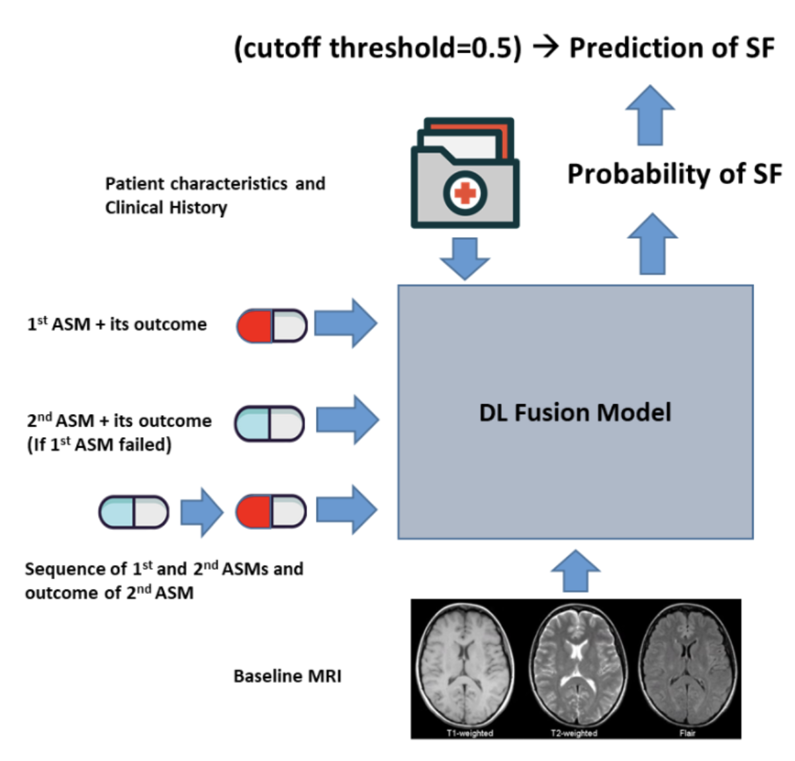
-
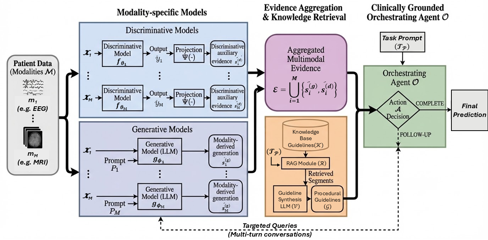
-
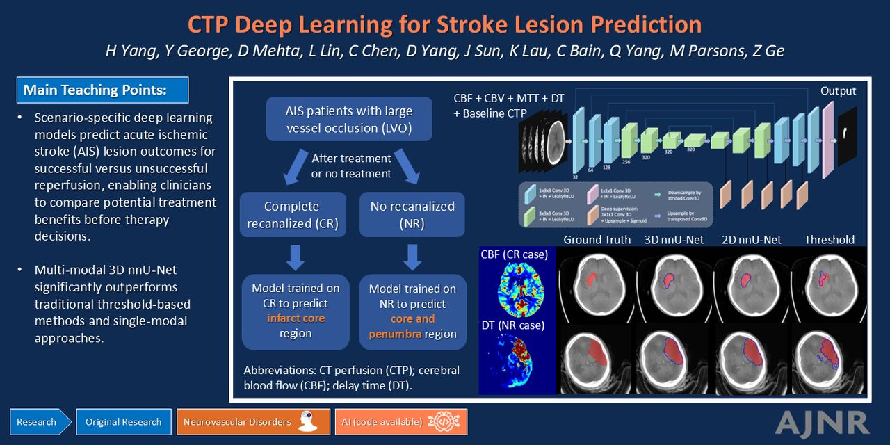
-
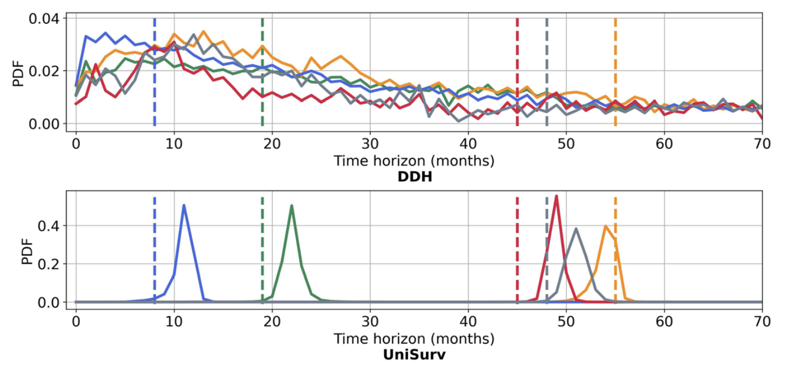
-
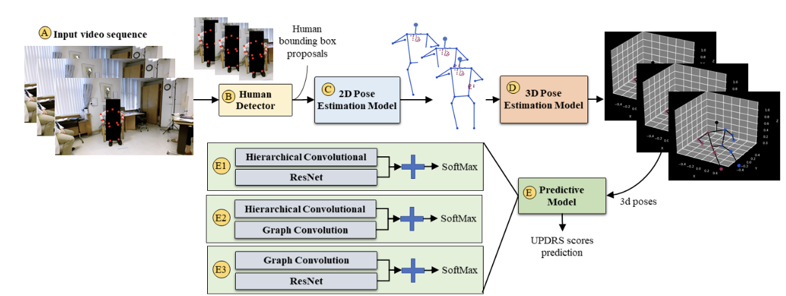
AI for Dermatology
Trustworthy and clinically deployed AI for skin lesion analysis. Developed in collaboration with Alfred Health, University of Queensland, Koita Center of Digital Health (India), and Molemap Pty. Ltd.
-
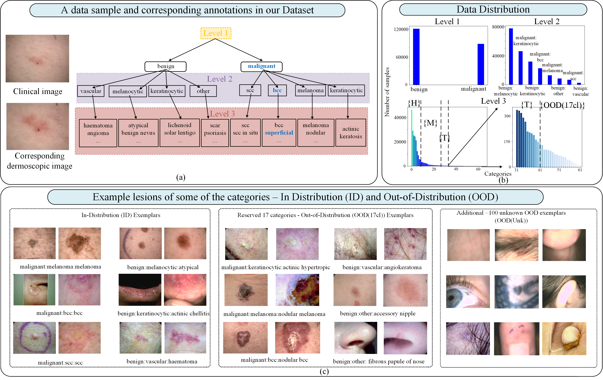
-
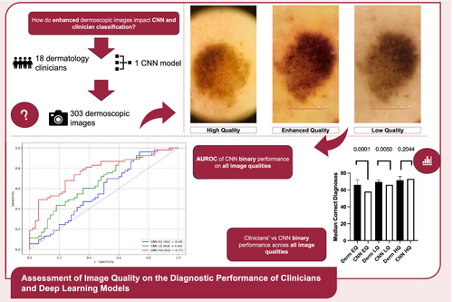
-
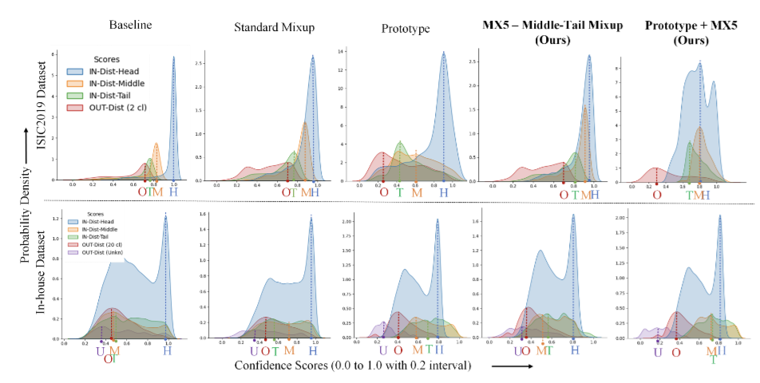
AI for Opthalmology
AI systems for automated analysis of retinal images for eye disease detection. Developed with Optain Health Pty. Ltd.
-
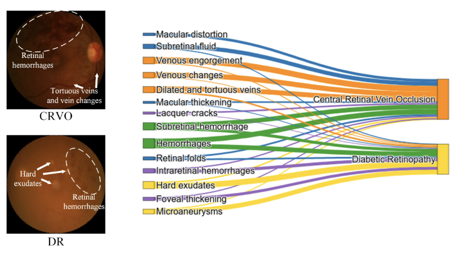
-
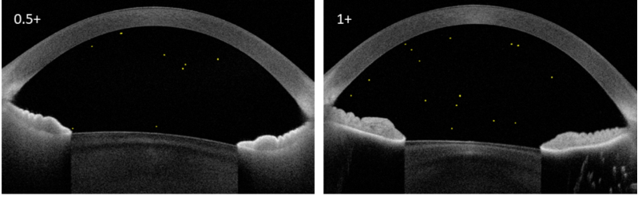
AI for Histopathology Analysis
AI systems for automated analysis of whole slide images to support oncology and tissue pathology workflows. Developed with Australian Institute of Health Innovation at Macquire University
-
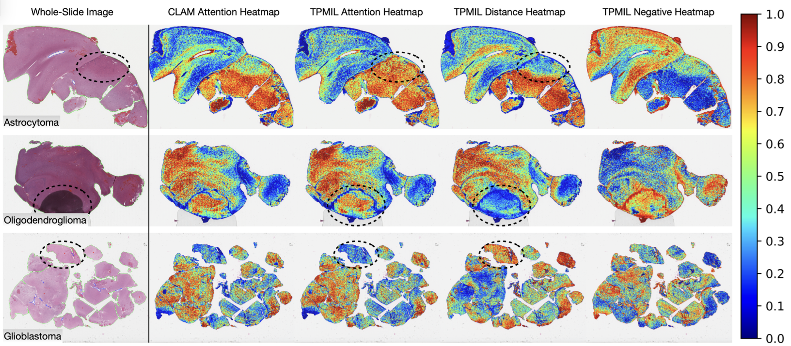
AI for Cardiology Expanding — Seeking Partnerships
I am actively looking for clinical collaborators in cardiology to develop and translate AI tools for cardiac disease management.
AI for Human Kinetics & Wearables Expanding — Seeking Partnerships
Interested in partnerships exploring wearable sensor data and human movement analytics for clinical applications.
Interested in a clinical collaboration? Get in touch → · ← Back to Research